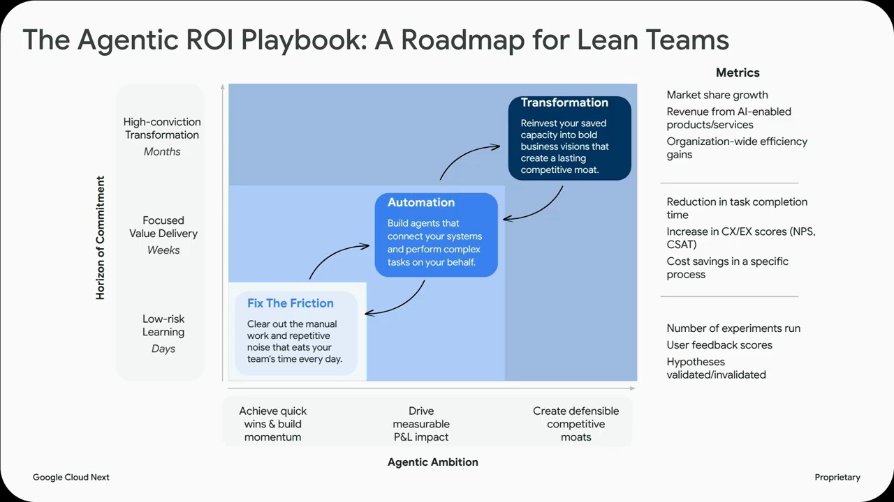
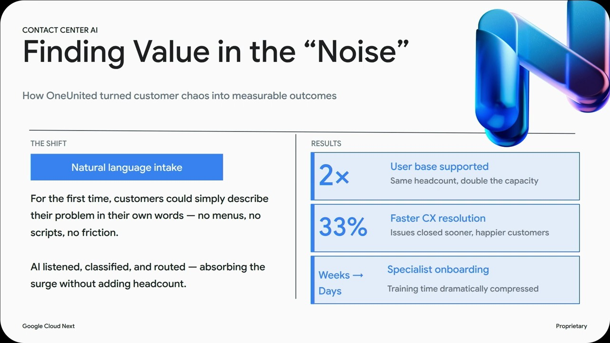
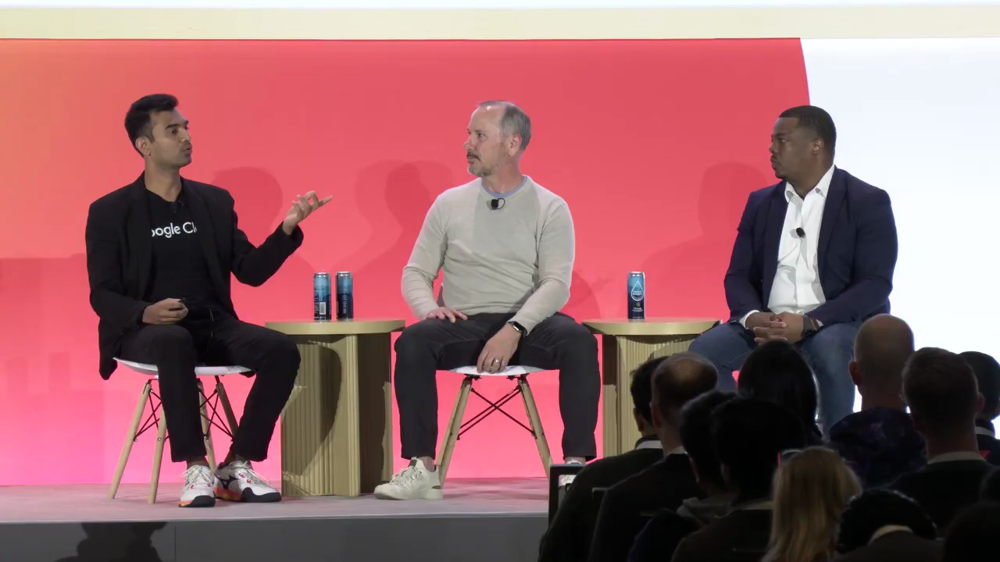
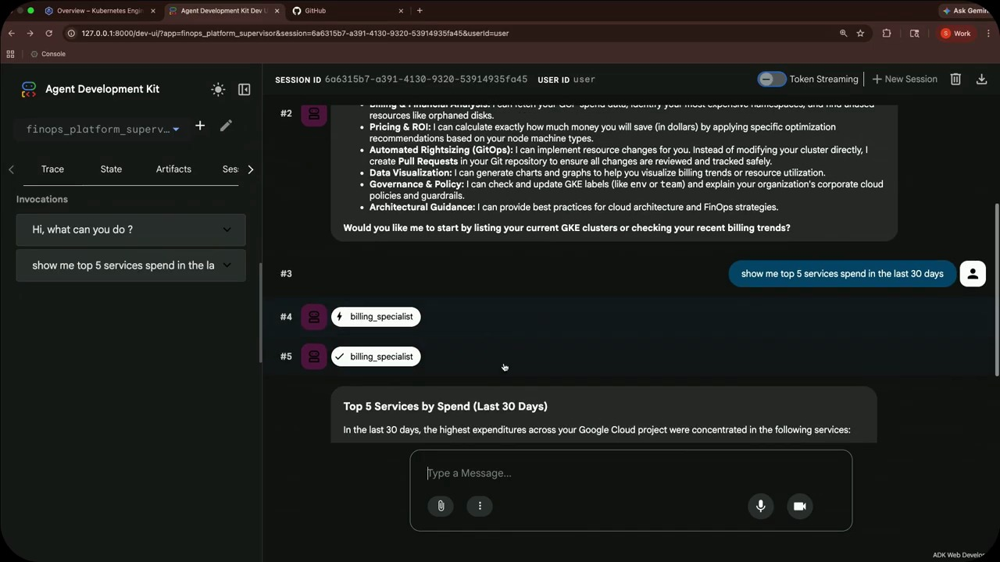
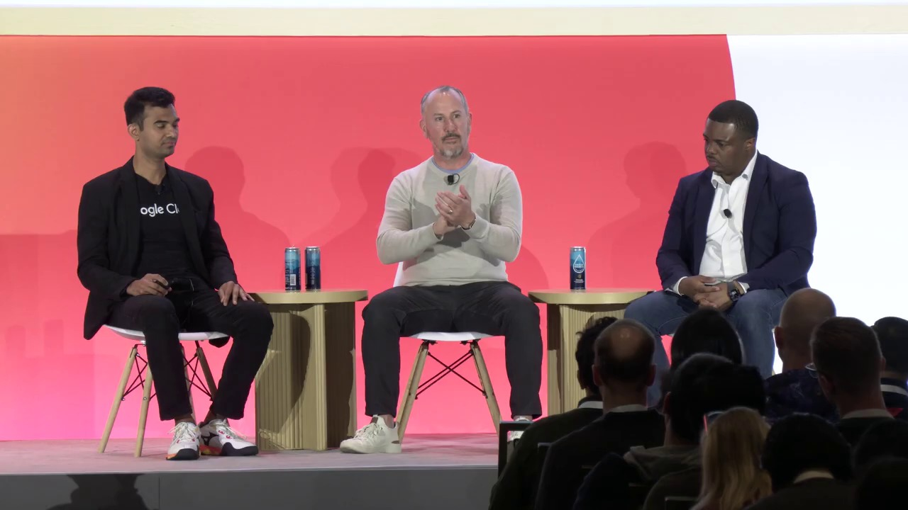
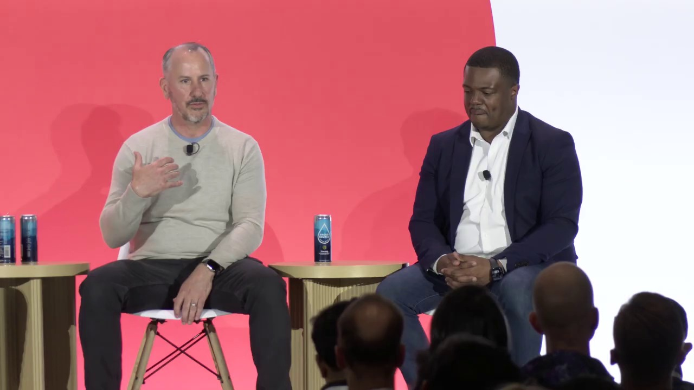
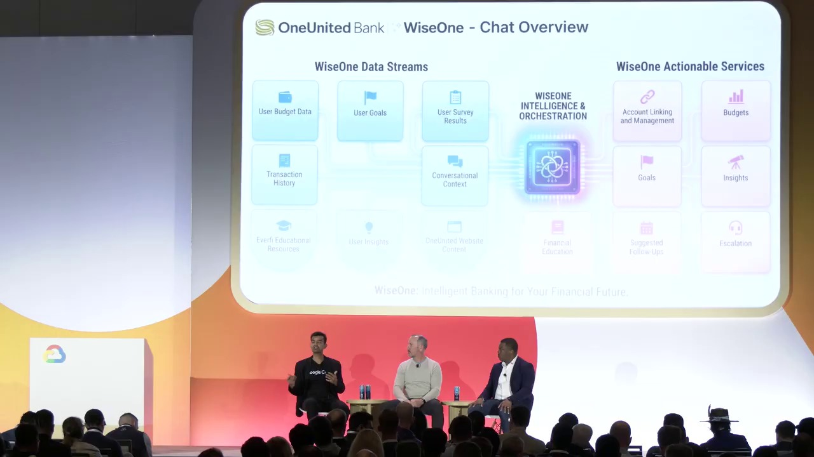
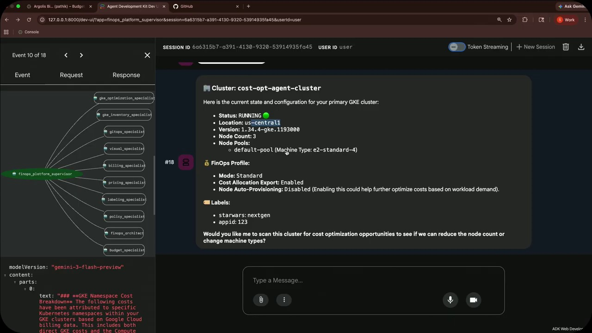
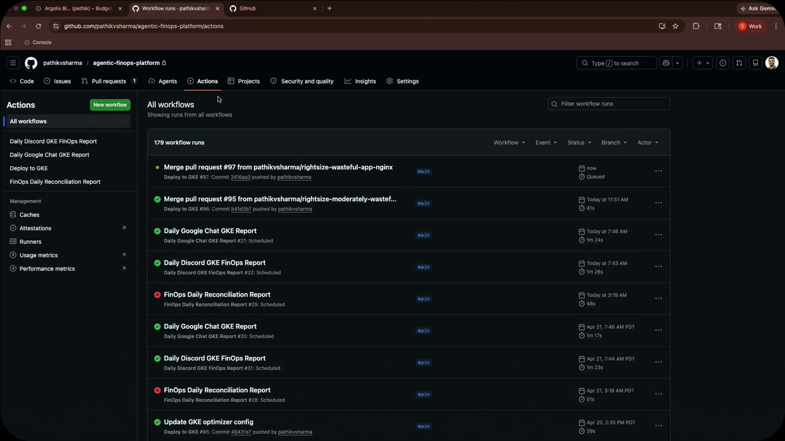
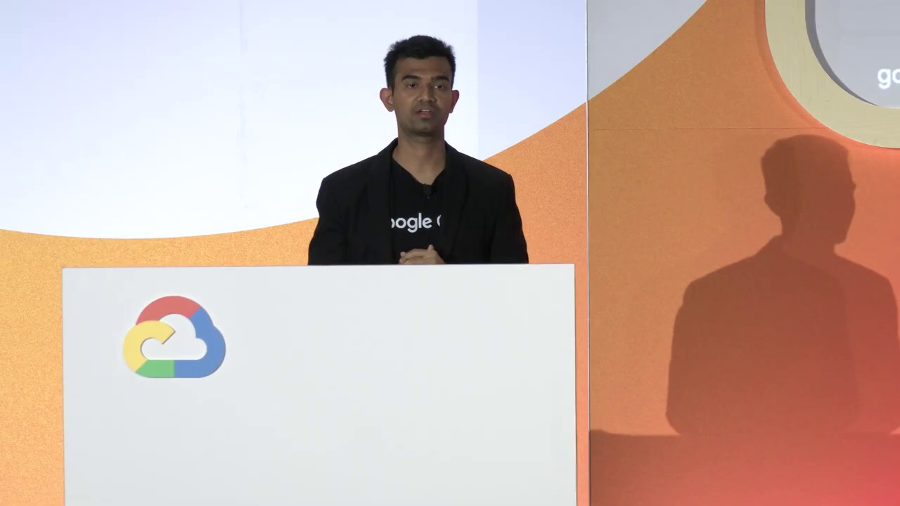

Key Moments











Summary & Script
The agentic ROI framework for lean teams
Source: https://www.youtube.com/watch?v=GcQs3qf-AAE
Video ID: GcQs3qf-AAE
Overview
The video introduces the Agentic ROI Framework, a structured approach for lean teams to turn AI hype into measurable business value. Through a mix of theory, a real‑world case study from One United Bank, and a demo of AI agents managing cloud spend, the presenters show how to identify high‑friction tasks, automate them with AI agents, and unlock capacity for product innovation. The ultimate goal is rapid, differentiated product delivery without massive headcount increases.
Topics Covered
- Why AI ROI matters – Boards demand hard numbers; many AI projects fail because value isn’t defined before coding.
- The two competing “races” – (1) Innovation race: huge AI spend with little ROI, (2) Steady‑outcome race: every dollar tied to a business result.
- Agentic ROI Framework (3 phases)
- Identify friction – Locate repetitive, high‑volume, low‑complexity manual work (e.g., account opening, loan processing, password resets).
- Automate with agents – Deploy AI agents across the enterprise to buy back capacity and reduce manual effort.
- Transform – Reallocate freed‑up capacity to build competitive products.
- One United Bank case study –
- Sudden 2× customer surge during COVID‑19/George Floyd protests strained a 150‑person lean team.
- Legacy phone tree created friction; switched to NLP‑based agents for intent‑based routing and pre‑call authentication.
- Results: faster training (days vs. weeks), reduced call‑handling time, ability to staff with lower‑skill agents, and a richer knowledge base.
- Extending the win – Leveraged the same agent platform to tackle fraud/dispute cases, integrating authentication, Salesforce, and real‑time dispute APIs.
- Demo preview – An “army of AI agents” that monitors, reports, forecasts, and optimizes cloud spend at scale, illustrating the framework in action.
Key Takeaways
- Define ROI before coding – Align AI initiatives with clear business outcomes from day 1.
- Start with the loudest pain points – Target high‑volume, low‑complexity tasks for the biggest immediate lift.
- AI agents can replace manual steps – From call routing to authentication, agents free skilled staff for higher‑value work.
- Lean teams can scale without headcount – Re‑skill lower‑tier staff and cut training time dramatically.
- Data captured during automation fuels next‑stage use cases – Reuse intent and interaction data to address fraud, disputes, or other verticals.
- The framework is cyclical – Each successful automation creates new data, revealing further friction points to attack.
Notable Quotes
- “The hardest thing for lean teams is you can’t afford to run these science projects without answering where the ROI is.”
- “We moved from a seven‑layer phone tree to intent‑based routing, turning a complex call into an actionable piece of information.”
- “Training call‑center staff went from weeks to days because we reduced the problem space to one intent per agent.”
- “Every dollar spent must be tied to a business outcome – that’s the steady‑outcome race.”
Podcast Script
JORDAN: Welcome to Episode 9 of SlackCasts by PodSlacker — where AI does the watching so you can do the listening. If you want a richer experience with today's episode, visit PodSlacker dot com slash SlackCasts — you'll find a written summary, key frame moments from the video, and an interactive AI chat to explore the topic as deep as you like. Now let's get into it.
MIKE: Today we're unpacking the Agentic ROI Framework—a playbook for lean teams to turn AI hype into measurable cashflow. Patik and Andre set the stage, One United Bank’s CIO James walks us through a real‑world case, and we cap it with a demo of AI agents policing cloud spend. Let’s start with the why: why does ROI matter more than ever in AI projects?
JORDAN: The presenters frame it as two competing races. The “innovation race” pours billions into AI labs, but six months later the ROI evaporates because no one asked the business‑value question before the first line of code. In contrast, the “steady‑outcome race” ties every dollar to a concrete outcome, which is the only viable path for sub‑100‑person teams.
MIKE: That contrast hits home for any CTO juggling budget scrutiny. If the board wants hard numbers, the first step is to define those numbers up front. How does the framework formalize that?
JORDAN: It breaks the journey into three phases. Phase 1: Identify friction—find high‑volume, low‑complexity manual tasks like account opening, loan processing, or password resets. Phase 2: Automate with AI agents across the enterprise to buy back capacity. Phase 3: Transform—redeploy the freed capacity toward differentiated product development.
MIKE: A classic “fix‑the‑leaky‑bucket, then scale” approach. Let’s dive into Phase 1 with the One United Bank story. James, what was the pain point that triggered the initiative?
JORDAN: In mid‑2020 the bank’s customer base doubled in 60 days due to the pandemic and the George Floyd protests. Their legacy seven‑layer phone tree choked under the surge, forcing customers into endless menus while agents were stretched thin. The friction was unmistakable: voice‑channel volume, complex queries, and a call‑center that couldn’t socially distance or scale headcount.
MIKE: So they needed a solution that didn’t depend on hiring more staff. How did they shift from a phone tree to an AI‑driven experience?
JORDAN: They replaced the static IVR with a natural‑language processing front‑end built on Dialogflow. Instead of “Press 1 for…”, the system asked “How can we help you?” and captured intent in real time. That intent fed an intent‑based routing engine, which instantly matched callers to the appropriate function—reducing mean handling time and surfacing a richer knowledge base.
MIKE: Intent‑based routing sounds like a game‑changer for both the customer and the agent. What concrete ROI did they see?
JORDAN: First, training time collapsed from weeks to days because agents only needed to master a single intent per bot rather than navigating a multi‑screen workflow. Second, the bank could staff the lower‑skill tier with agents handling repetitive intents, freeing senior staff for complex cases. Third, call‑handling time dropped, and the knowledge base grew automatically, enabling faster issue resolution. Those metrics translated directly into labor cost savings and higher CSAT.
MIKE: That’s Phase 2—automation delivering capacity. The framework emphasizes reusing data from the first automation to fuel the next use case. What did One United Bank tackle next?
JORDAN: They repurposed the authentication flow and intent capture to address fraud and dispute cases. By integrating Dialogflow’s authentication with Salesforce case IDs and a real‑time disputes API from Viserve, they built an end‑to‑end dispute intake bot. This eliminated manual data entry, cut average dispute resolution time, and added another layer of fraud detection.
MIKE: So the same agent platform became a foundation for a vertical expansion—classic network effect. Did they quantify the secondary ROI?
JORDAN: While exact dollar figures weren’t disclosed, the bank reported a measurable reduction in dispute handling cost and a lower false‑positive rate on fraud alerts, thanks to the 360‑degree customer view that the bot supplied to investigators. The key takeaway is that the data pipeline—intent logs, authentication tokens, API responses—became a reusable asset for future automations.
MIKE: That feeds directly into Phase 3: transformation. How did the freed capacity translate into new product initiatives?
JORDAN: With senior agents unburdened, the bank accelerated its digital‑mortgage pipeline and launched a community‑investment product targeted at underserved neighborhoods—something that directly aligns with their mission‑driven charter. The ROI here is strategic rather than purely cost‑based: they differentiated themselves against neobanks and deepened market penetration.
MIKE: It’s a compelling illustration of “buying back capacity to invest in differentiation.” Let’s pivot to the demo they previewed—an army of AI agents managing cloud spend. How does that example map onto the same three‑phase framework?
JORDAN: The demo shows agents continuously monitoring usage metrics, forecasting spend, and triggering automated rightsizing or reservation purchases. Phase 1 is the identification of wasteful spend patterns; Phase 2 is the autonomous agent that performs the optimization; Phase 3 is the reinvestment of the saved dollars into higher‑value engineering projects, like AI model training or new service rollouts.
MIKE: So the framework isn’t limited to contact‑center use cases; it scales to infrastructure governance. What technical stack powered that cloud‑spend agent army?
JORDAN: They leveraged Google Cloud’s Operation Suite for telemetry, Pub/Sub for event streaming, and Vertex AI for the decision‑making models. Each agent is a lightweight Cloud Run service that consumes cost metrics, applies a reinforcement‑learning policy, and executes Cloud Billing APIs to apply discounts or shut down idle resources.
MIKE: That’s a neat blend of observability and autonomous actuation—exactly the kind of “agentic” behavior the framework champions. Before we close, are there any cautionary notes the presenters mentioned about applying this framework?
JORDAN: The biggest pitfall is diving into automation without a pre‑defined ROI hypothesis. They stress that every pilot must have a quantifiable success metric—whether it’s reduced FTE hours, lowered cost per transaction, or improved NPS. Also, start with the “loudest” friction; attempting to automate a low‑volume, high‑complexity process rarely yields quick wins.
MIKE: Summing up: define ROI first, target high‑volume low‑complexity tasks, deploy intent‑driven agents, capture data, and iterate. That creates a virtuous cycle where each automation fuels the next. Anything else for our listeners to take away?
JORDAN: Remember the framework is cyclical. After Phase 3 you loop back—new products generate new operational touchpoints, which become the next friction points to automate. It’s a sustainable engine for continuous improvement, especially for teams that can’t simply hire more hands.
MIKE: And for leaders listening, the strategic message is clear: AI agents aren’t a buzzword—they’re a lever to convert scarce engineering capacity into measurable, competitive advantage. Thanks to Patik, Andre, and James for the deep dive.
JORDAN: That's a wrap on today's SlackCast. Head over to PodSlacker dot com slash SlackCasts for the written summary, visual key moments, and an AI chat to dive even deeper into today's topic. Until next time — slack off smarter.